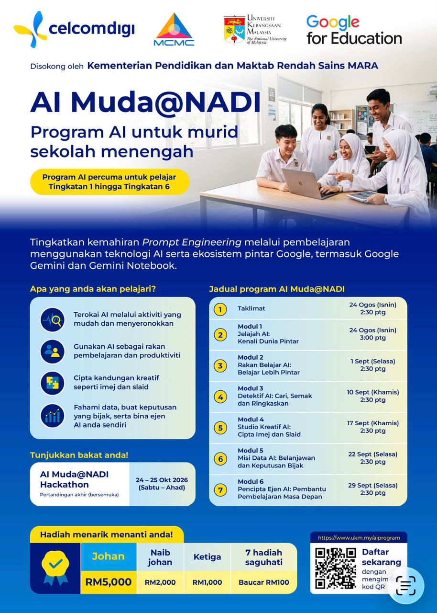
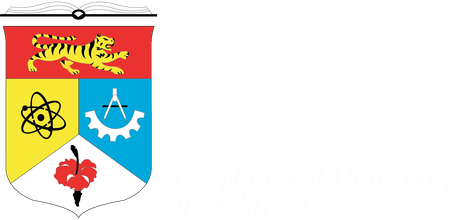

Belajar AI hari ini,
cipta masa depan esok.
AI Muda@NADI ialah program AI percuma untuk murid sekolah menengah — pertingkat kemahiran prompt engineering melalui ekosistem pintar Google, termasuk Gemini dan Gemini Notebook.
Apa yang anda akan pelajari?
Diterajui oleh Suruhanjaya Komunikasi dan Multimedia Malaysia (MCMC), dilaksanakan oleh CelcomDigi bersama Universiti Kebangsaan Malaysia (UKM), dengan sokongan Kementerian Pendidikan Malaysia.
Teroka AI
Aktiviti mudah dan menyeronokkan yang direka khas untuk murid sekolah.
Rakan Belajar
Gunakan AI sebagai rakan belajar dan pembantu produktiviti harian.
Cipta Kandungan
Hasilkan imej dan slaid pembentangan kreatif dengan bantuan AI.
Fahami Data
Buat keputusan bijak dan bina konsep ejen AI sendiri.
Poster AI Muda@NADI 2026

{kind=link}
Enam modul dari penerokaan asas kepada pembangunan ejen AI
Jelajah AI
Kenali Dunia PintarPengenalan kepada AI, fungsi asas dan aktiviti penerokaan mudah.
Rakan Belajar AI
Belajar Lebih PintarMenggunakan AI sebagai rakan belajar, sokongan produktiviti dan pengurusan tugasan.
Detektif Ilmu AI
Cari, Semak dan RingkasMencari, menyemak dan meringkaskan maklumat dengan bantuan AI.
Studio Kreatif AI
Cipta Imej dan SlaidMenghasilkan imej, idea visual dan slaid pembentangan menggunakan AI.
Misi Data AI
Belanjawan dan Keputusan BijakMemahami data, membina belanjawan dan membuat keputusan berasaskan maklumat.
Pencipta Ejen AI
Pembantu Pembelajaran Masa DepanMereka bentuk konsep ejen AI sebagai pembantu pembelajaran.
Belajar bercakap dengan AI, satu mesej pada satu masa
Kemahiran teras program ini — bagaimana bertanya, menyusun arahan, dan mendapatkan jawapan yang berguna daripada AI.
Jadual AI Muda@NADI
Taklimat Program
Penerangan program, kaedah penyertaan, penilaian dan hackathon.
Modul 1: Jelajah AI
Kenali Dunia Pintar — pengenalan kepada AI dan aktiviti penerokaan mudah.
Lihat PosterModul 2: Rakan Belajar AI
Belajar Lebih Pintar — AI sebagai rakan belajar dan produktiviti.
Modul 3: Detektif Ilmu AI
Cari, Semak dan Ringkas — mencari dan menyemak maklumat dengan AI.
Modul 4: Studio Kreatif AI
Cipta Imej dan Slaid — menghasilkan kandungan visual dengan AI.
Modul 5: Misi Data AI
Belanjawan dan Keputusan Bijak — memahami data dan membuat keputusan.
Modul 6: Pencipta Ejen AI
Pembantu Pembelajaran Masa Depan — mereka bentuk konsep ejen AI.
Pemilihan 25 Pasukan Terbaik
Markah keseluruhan mengambil kira kehadiran, penyempurnaan tugasan, kefahaman kandungan, kreativiti dan kebolehan menggunakan AI. 100 murid terbaik dipilih dan dibentuk kepada 25 pasukan untuk maju ke hackathon akhir.
Idea & Prototaip
Taklimat cabaran, pembentukan pasukan, idea, pembangunan prototaip dan bimbingan mentor.
Pembentangan & Keputusan
Penyempurnaan projek, pembentangan, penilaian panel, pameran dan penyampaian hadiah. 25 pasukan (4 murid dan seorang guru pembimbing setiap satu) membangunkan penyelesaian AI berdasarkan masalah komuniti, kandungan pembelajaran interaktif, atau projek inovasi terbuka berkaitan MCMC dan NADI.
Terbuka kepada murid Tingkatan 1 hingga Tingkatan 6
Program ini terbuka kepada murid yang sedang belajar di sekolah di bawah Kementerian Pendidikan Malaysia. Penyertaan latihan percuma, tiada sebarang yuran.
MyKad & ID DELIMa
Terbuka kepada pelajar Malaysia yang mempunyai MyKad Malaysia dan ID DELIMa.
Peranti & Internet
Akses kepada komputer riba atau tablet serta sambungan Internet untuk sesi dalam talian.
Kehadiran & Tugasan
Wajib menghadiri sesi yang ditetapkan dan melengkapkan tugasan bagi setiap modul.
Pasukan Hackathon
Peserta hackathon bertanding dalam pasukan empat murid bersama seorang guru pembimbing.
Setiap modul mempunyai aktiviti penilaian, dan sijil diberikan kepada peserta yang melengkapkan program.
Sijil diberikan kepada peserta modul, peserta yang melengkapkan enam modul, guru pembimbing serta finalis dan pemenang hackathon. Penyertaan turut membuka peluang pengiktirafan kokurikulum melalui PAJSK di bawah komponen Ekstra Kurikulum, peringkat kebangsaan.
- Akses kepada enam modul pembelajaran dalam talian
- Bimbingan fasilitator dan mentor sepanjang program
- Peluang terpilih ke hackathon akhir peringkat kebangsaan
- Sijil penyertaan dan peluang pengiktirafan PAJSK
Hadiah Pertandingan AI Muda@NADI Hackathon
Hadiah wang tunai dan baucar menanti 25 pasukan terbaik yang bertanding di pertandingan akhir bersemuka pada 24–25 Oktober 2026.
Pihak yang menerajui dan melaksanakan program




Cara Menyertai AI Muda@NADI
Penyertaan percuma untuk semua murid Tingkatan 1 hingga Tingkatan 6 di sekolah KPM. Pendaftaran diselaraskan melalui sekolah dan saluran rasmi program — ikuti langkah di bawah untuk menyertai.
Daftar SekarangDapatkan Maklumat
Hubungi guru penyelaras kokurikulum atau ikuti saluran rasmi NADI, CelcomDigi dan MCMC.
Sertai Taklimat
Hadiri Taklimat Program dalam talian pada 24 Ogos 2026, 2.30 petang.
Lengkapkan 6 Modul
Hadiri dan lengkapkan tugasan bagi keenam-enam modul, 24 Ogos–29 September 2026.
Layak ke Hackathon
100 murid terbaik (25 pasukan) dipilih untuk bertanding pada 24–25 Oktober 2026.